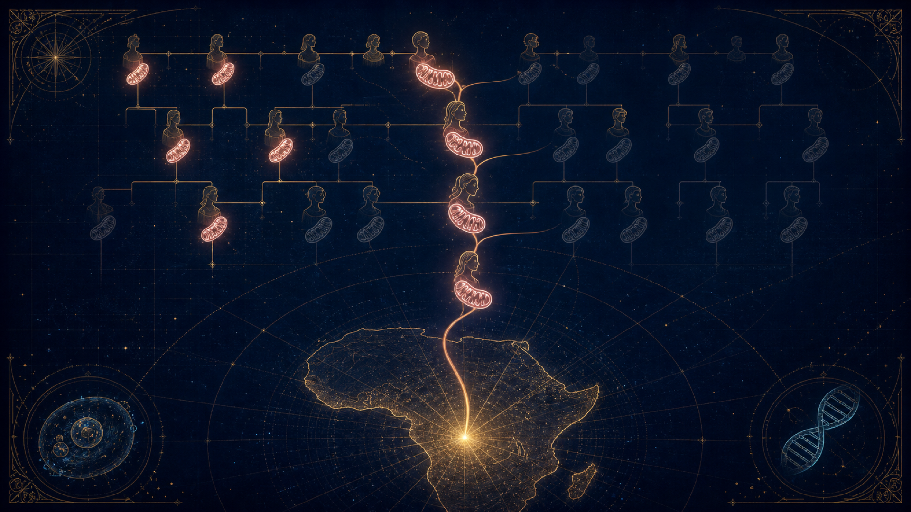
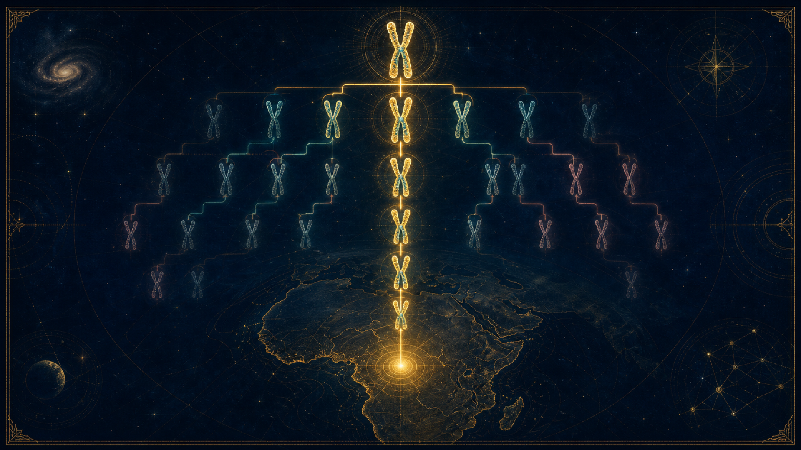
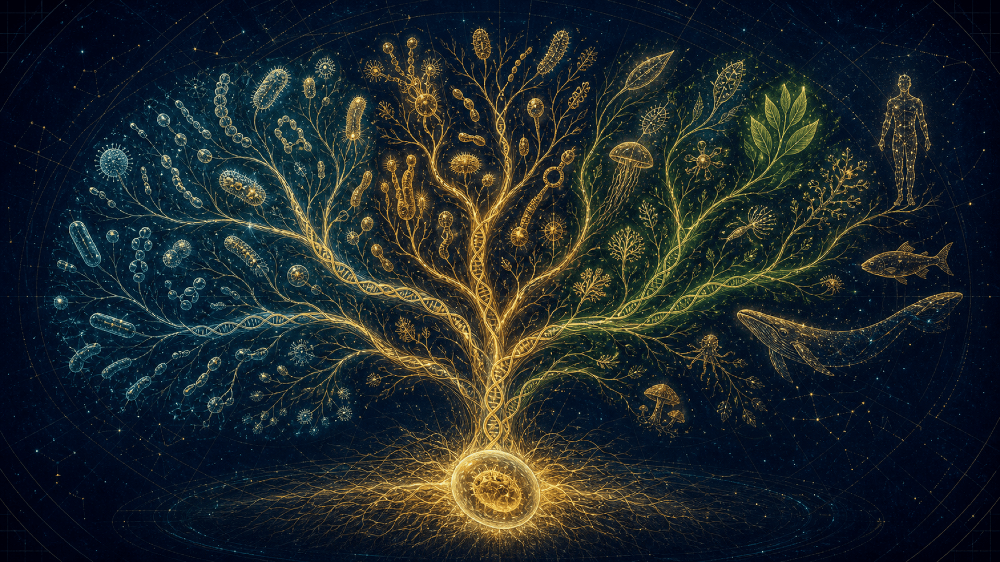

Ève mitochondriale, Adam chromosome Y, LUCA : ce que la science dit vraiment de nos ancêtres communs — et comment en parler sans jamais opposer la science à la foi. Le « comment » et le « pourquoi », côte à côte.
Pas deux individus créés d'un coup, mais des points de convergence génétique.
En biologie, on ne parle pas vraiment d'un « Adam » et d'une « Ève » au sens biblique (deux individus créant tout le reste d'un coup), mais plutôt de points de convergence génétique dans l'histoire de notre évolution. Cette page reprend le texte mot pour mot et le met en scène : ce que la science établit, et comment le partager avec respect.
L'Ève mitochondriale : l'ancêtre commune la plus récente par la lignée des mères.
L'Adam chromosome Y : l'ancêtre commun le plus récent par la lignée des pères.
LUCA : la cellule ancestrale dont découle toute la vie sur Terre.
Objectifs pédagogiques
Ce dossier apprend à distinguer la convergence génétique du mythe des « deux seuls humains ».
Comprendre
Ce que sont vraiment l'Ève mitochondriale et l'Adam chromosome Y : des ancêtres communs par une seule lignée, pas le premier couple.
Distinguer
Séparer le comment (gènes, cellules, mécanismes) du pourquoi (sens, dignité, morale) — deux lunettes sur la même réalité.
Dialoguer
Répondre avec respect aux questions sensibles : science contre foi, singes ou Dieu, dates qui changent.
Texte mot pour mot
Les « premières cellules » humaines, vues par la science.
01
En biologie, on ne parle pas vraiment d'un « Adam » et d'une « Ève » au sens biblique (deux individus créant tout le reste d'un coup), mais plutôt de points de convergence génétique dans l'histoire de notre évolution.
Voici comment la science explique ces « premières cellules » humaines.
Point de rigueur
« Ève » et « Adam » ne désignent pas un couple ni deux personnes uniques : ce sont des points de coalescence. Si l'on remonte la lignée strictement maternelle de chaque humain vivant, toutes ces lignées se rejoignent sur une même femme ; de même pour la lignée strictement paternelle et un même homme. Tout le reste de notre ADN (les autres chromosomes) provient de milliers d'autres contemporains.
Sommaire
Trois ancêtres, une seule famille humaine.
02
1 · L'Ève mitochondriale — la lignée des mères
La femme dont la lignée mitochondriale a survécu, sans interruption, jusqu'à tous les humains d'aujourd'hui. Probablement en Afrique, il y a environ 150 000 à 200 000 ans.
2 · L'Adam chromosome Y — la lignée des pères
L'équivalent masculin : le chromosome Y qui s'est transmis de père en fils jusqu'à remplacer tous les autres. En Afrique également, il y a environ 200 000 à 300 000 ans.
3 · LUCA — la racine de toute vie
Bien avant les humains : la toute première cellule dont découle toute la vie sur Terre, des bactéries aux baleines, il y a environ 3,5 à 4 milliards d'années.
4 · Science & foi — le « comment » et le « pourquoi »
Deux regards sur la même réalité : la science cherche le mécanisme, la foi cherche le sens. Avec des mots, des images et des réponses pour en parler ensemble.
Réalisé parLalie & Ymir
Ancêtre n°1 · La lignée des mères
L'Ève mitochondriale.
03

L'ADN mitochondrial, transmis de mère en fille, converge vers une ancêtre commune
C'est la femme qui est l'ancêtre commune la plus récente de tous les êtres humains vivants, en suivant la lignée maternelle.
Le principe : Nous héritons de nos mitochondries (les centrales énergétiques de la cellule) uniquement par notre mère.
La réalité : Elle n'était pas la seule femme sur Terre à son époque. Elle est simplement celle dont la lignée mitochondriale a survécu jusqu'à aujourd'hui sans interruption.
Localisation : Elle vivait probablement en Afrique il y a environ 150 000 à 200 000 ans.
Anti-intox · ce que disent les données
L'Afrique est solidement établie. Pour la date, l'étude fondatrice de 1987 donnait 140 000–200 000 ans ; les estimations génomiques récentes pointent plutôt vers ~120 000–200 000 ans, le plus souvent autour de 150 000–160 000 ans. Mieux vaut donner une fourchette qu'un chiffre unique : la science affine encore ses horloges.
Détail honnête : l'héritage mitochondrial est maternel à de très rares exceptions près (quelques cas de transmission biparentale documentés). La règle « par la mère » reste la bonne image.
Ancêtre n°2 · La lignée des pères
L'Adam chromosome Y.
04

Le chromosome Y, transmis de père en fils, converge vers un ancêtre commun
C'est l'équivalent masculin, l'ancêtre commun le plus récent par la lignée paternelle.
Le principe : Le chromosome Y se transmet de père en fils presque sans changement.
La réalité : Comme pour Ève, il n'était pas le seul homme. C'est le « gagnant » génétique dont le chromosome Y a fini par remplacer tous les autres au fil des millénaires.
Localisation : Il vivait également en Afrique, et les estimations récentes suggèrent qu'il a vécu il y a environ 200 000 à 300 000 ans.
Anti-intox · ce que disent les données
Les estimations varient selon les jeux de données : ~120 000–156 000 ans (Poznik et al. 2013), ~192 000–307 000 ans (Karmin et al. 2015), et jusqu'à ~300 000 ans et plus lorsqu'on inclut la lignée africaine archaïque A00 (Mendez et al. 2013). La fourchette « 200 000–300 000 ans » du texte est défendable, mais c'est une borne haute : à présenter comme un intervalle, pas comme un chiffre figé.
La grande méprise
Pourquoi « Adam » et « Ève » ne se sont jamais rencontrés.
05
Contrairement au récit traditionnel, ces deux individus n'ont probablement jamais pris le café ensemble.
Ils ont vécu à des dizaines de milliers d'années d'intervalles.
Ils faisaient partie de populations de chasseurs-cueilleurs déjà bien établies.
Anti-intox · nuance honnête
Le point solide : ils ne formaient pas un couple et n'avaient aucune raison d'être contemporains — chacun est un point de coalescence indépendant (l'un pour l'ADN mitochondrial, l'autre pour le chromosome Y). L'écart exact, lui, est débattu : certaines analyses de 2013 trouvaient des fourchettes qui se chevauchent presque, tandis que la lignée archaïque du Y rouvre un écart de l'ordre de 100 000 ans. À retenir : jamais un couple, pas forcément contemporains.
Le saviez-vous ? · La cellule ancestrale
LUCA, la racine de tout le vivant.
06

LUCA — la racine commune d'où partent toutes les branches du vivant
Si l'on remonte encore plus loin, bien avant les humains, il existe LUCA (Last Universal Common Ancestor).
C'est la toute première cellule (ou groupe de cellules) dont découle toute la vie sur Terre : des bactéries aux baleines, en passant par vous et moi.
Anti-intox · précision de date
LUCA n'est pas l'origine de la vie elle-même, mais la lignée vers laquelle toute la vie actuelle se rejoint quand on remonte l'arbre. Le « 3,5 à 4 milliards d'années » est l'estimation classique ; une étude majeure de 2024 (Moody et al., Nature Ecology & Evolution) la repousse vers ~4,2 milliards d'années. Les plus anciennes traces de vie acceptées remontent à ~3,5 Ga (stromatolites de Pilbara) ; des indices possibles mais débattus vont jusqu'à ~4,1 Ga.
L'explication très simple
Votre corps, une immense bibliothèque.
07
Imaginez que votre corps soit une immense bibliothèque et que chaque cellule contient des livres de recettes (votre ADN) pour vous construire.
1. L'Ève mitochondriale : « Le livre de la Maman »
Dans chaque cellule, il y a une toute petite partie qui s'appelle la mitochondrie. C'est comme une petite pile qui donne de l'énergie.
La règle : Cette petite pile est spéciale : elle vient uniquement de la maman. La maman la donne à ses enfants, mais seule la fille peut la transmettre à son tour à ses propres enfants.
L'histoire : Si on remonte le temps, de maman en maman, on finit par arriver à une femme qui a vécu il y a très longtemps en Afrique. On l'appelle « Ève » parce que c'est la « Grand-Mère » de toutes les piles (mitochondries) de tous les humains sur Terre aujourd'hui.
2. L'Adam chromosome Y : « Le livre du Papa »
Pour les garçons, il y a un chapitre spécial dans le livre de recettes qu'on appelle le Chromosome Y.
La règle : Ce chapitre est transmis uniquement de père en fils. C'est comme un nom de famille qui ne changerait jamais.
L'histoire : Si on remonte de papa en papa, on arrive à un homme qui est le « Grand-Père » de tous les chromosomes Y des hommes actuels.
Ce qu'il faut retenir (très simplement)
Ce n'étaient pas les deux seuls humains : Il y avait plein d'autres gens autour d'eux à leur époque.
Une question de chance : C'est juste que, par pur hasard, leurs lignées à eux ne se sont jamais arrêtées. Les autres familles de l'époque ont fini par n'avoir que des garçons (donc la lignée de la « pile » s'est arrêtée) ou que des filles (donc le « nom de famille Y » s'est arrêté).
Ils ne se sont pas connus : Ils n'étaient pas mari et femme ! « Adam » a probablement vécu des milliers d'années après ou avant « Ève ».
C'est un peu comme si tu découvrais que tout le monde dans ton quartier a le même arrière-arrière-arrière-grand-père, mais que ce grand-père n'a jamais connu l'arrière-arrière-grand-mère des voisins !
Deux lunettes, une même réalité
L'Arbre et la Graine.
08
Il ne faut pas opposer la science à la foi, mais de montrer qu'elles regardent la même réalité avec des « lunettes » différentes.
L'humanité comme un grand arbre de famille : la graine, et les racines
L'exemple de « L'Arbre et la Graine »
Imaginez que l'humanité est un immense arbre de famille.
Le point de vue religieux : On regarde la graine plantée par Dieu au tout début. C'est l'histoire de l'origine, du « pourquoi » nous sommes là et de notre lien spirituel unique. Adam et Ève représentent cette essence humaine commune, créés à l'image de Dieu.
Le point de vue scientifique : On regarde les racines et la sève sous la terre. Les scientifiques ne cherchent pas à remplacer l'histoire d'Adam et Ève, ils essaient juste de comprendre comment la « sève » (notre ADN) a voyagé à travers le temps.
Quand la science parle d'un « Adam » ou d'une « Ève » génétique, elle dit simplement ceci : « Si on remonte les branches de l'arbre, on finit par trouver un tronc commun. »
Ce qui est beau, c'est que les deux disent la même chose fondamentale : Peu importe notre couleur de peau ou notre pays, nous sommes tous frères et sœurs. Nous venons tous d'une seule et même famille humaine. La religion l'appelle une « création », la science l'appelle une « ascendance commune », mais le message reste le même : nous sommes tous liés.
La posture juste
Ne pas dire que la religion a tort, ajouter qu'elle s'occupe du sens de la vie, tandis que la science s'occupe des détails techniques.
L'art du dialogue
Répondre avec respect aux questions sensibles.
09
Les questions qu'on vous posera
Des réponses prêtes, mot pour mot — si on vous demande :
« Est-ce que la science dit qu'Adam et Ève n'ont pas existé ? »
« La science ne cherche pas à prouver ou à nier la Bible, elle raconte l'histoire avec d'autres outils. C'est un peu comme regarder un tableau : le croyant voit l'intention du peintre et le message de l'œuvre (Adam et Ève), alors que le scientifique analyse les couches de peinture et les pigments pour comprendre comment le tableau a été fait. Les deux regardent la même réalité, mais l'un cherche le sens et l'autre le mécanisme. »
« Pourquoi la science parle-t-elle de milliers d'années alors que la Bible dit que c'était au début ? »
« Pour la science, le "temps" est très long parce qu'elle compte les battements de cœur de milliards de générations. Pour la foi, ce qui compte, c'est le moment où l'être humain est devenu spécial, capable de parler à Dieu et d'avoir une conscience. On peut voir les récits religieux comme un résumé spirituel : peu importe la durée exacte, l'important est de savoir que nous avons tous une origine commune et une dignité partagée. »
« Mais alors, nous descendons des singes ou de Dieu ? »
« Ce n'est pas forcément l'un ou l'autre ! On peut voir le corps humain comme une magnifique "maison" que la nature a mis très longtemps à construire (c'est l'évolution). Et on peut croire que c'est Dieu qui a apporté la "lumière" dans cette maison (l'âme, la conscience). La science explique comment la maison est bâtie, la religion explique qui est l'habitant. »
Conseils
Utilisez le « Nous » : Dites « Notre famille humaine », « Nos origines ». Cela montre que vous êtes dans le même bateau qu'eux.
Validez leur point de vue : Commencez par « Je comprends ce que vous voulez dire » ou « C'est une belle vision ». Cela ouvre l'écoute.
L'image du « Comment » vs le « Pourquoi » : C'est l'argument le plus efficace. La science répond au Comment (les gènes, les cellules). La religion répond au Pourquoi (le but de la vie, l'amour, la morale).
« Si on descend tous d'un seul Adam et d'une seule Ève, pourquoi y a-t-il des espèces différentes ? »
Imagines une grande famille qui se sépare : certains partent vivre à la montagne, d'autres au bord de la mer. Au bout de milliers d'années, le soleil ou le froid changent un peu l'apparence de leurs descendants (la couleur de peau, la forme des yeux) pour les protéger. Mais si on regarde à l'intérieur, dans leur sang, c'est la même famille ! La science montre qu'on est identiques à 99,9 %. Les différences, c'est juste la « peinture » extérieure de la maison qui s'est adaptée au climat.
« Comment la vie a pu commencer à partir de "rien" ou d'une seule cellule ? »
C'est là que la science et la foi se rejoignent dans l'émerveillement. La science voit une cellule minuscule capable de se diviser et de devenir, après des millions d'années, un être humain capable de réfléchir et d'aimer. Le croyant voit dans cette « force de vie » incroyable la main de Dieu. On peut voir la toute première cellule (LUCA) comme la première note d'une immense symphonie qui continue de jouer aujourd'hui.
« Pourquoi la science change-t-elle tout le temps d'avis alors que la religion est stable ? »
« C'est vrai, la science progresse ! C'est comme une lampe de poche dans le noir : plus les piles sont neuves (nouvelles technologies), plus on voit loin dans le passé. La religion nous donne la carte du chemin (le sens de la vie), et la science nous donne la loupe pour regarder les cailloux et les fleurs sur la route. L'une donne la direction, l'autre explique les détails du décor. »
« Au fond, ce qui est génial, c'est qu'on soit tous d'accord sur une chose : chaque être humain est unique et précieux. Que ce soit par la création ou par l'évolution, nous sommes tous connectés. »
Anti-intox · le « 99,9 % »
Le chiffre de 99,9 % d'identité est bien celui du Projet Génome Humain (deux personnes diffèrent d'environ 0,1 % au niveau des « lettres » de l'ADN). En comptant aussi les grandes différences de structure (insertions, duplications), la similarité descend vers ~99,5–99,6 %. Les deux chiffres sont justes — ils ne comptent simplement pas la même chose.
Le mot scientifique & le mot « passerelle »
Des mots plus doux pour ouvrir le dialogue — sans rien trahir de la science.
Le mot scientifique
Le mot « Passerelle » (plus doux)
Pourquoi l'utiliser ?
Évolution
Cheminement de la vie
« Évolution » fait parfois peur car on pense au hasard. « Cheminement » suggère une direction, un mouvement.
Mutation / Hasard
Adaptation / Providence
Dire que la vie « s'adapte merveilleusement » montre un respect pour la complexité de la création.
Big Bang
L'Étincelle initiale
Cela rejoint l'idée de la lumière (« Que la lumière soit ») sans entrer dans des calculs de physique complexes.
Sélection naturelle
L'intelligence de la nature
Cela permet de dire que la vie n'est pas « cruelle », mais qu'elle est organisée pour que le meilleur survive et continue.
Ancêtre commun
Source commune / Racine
« Ancêtre » fait penser au singe (ce qui peut braquer). « Source » ou « Racine » fait penser à une famille unie.
La phrase qui réconcilie
Si on te demande si tu « crois » à la science ou à la Bible, tu peux répondre :
« Je ne choisis pas entre les deux. La science m'aide à comprendre comment le monde fonctionne, et la foi m'aide à comprendre qui je suis et comment je dois agir. »
Pour approfondir
Les bases scientifiques de ces concepts.
10
Pour approfondir ou partager ces informations, voici les bases scientifiques sur lesquelles reposent ces concepts. Ces sources sont largement reconnues par la communauté des généticiens.
1. Les publications scientifiques de référence
Pour l'Ève mitochondriale : L'étude fondatrice a été publiée dans la revue Nature en 1987 par Cann, Stoneking et Wilson. Elle s'intitule « Mitochondrial DNA and human evolution ». C'est elle qui a établi pour la première fois que nous descendons tous d'une lignée maternelle africaine.
Pour l'Adam chromosome Y : De nombreuses études, notamment dans les revues Science et Nature (comme celle de Poznik et al. en 2013), ont affiné les dates de cet ancêtre paternel.
Pour LUCA (l'ancêtre de toute vie) : Les travaux de recherche sur le génome des bactéries et des organismes complexes montrent que toutes les formes de vie partagent un code génétique identique, ce qui pointe vers un ancêtre commun il y a environ 3,5 à 4 milliards d'années.
Cann, Stoneking & Wilson — « Mitochondrial DNA and human evolution » (1987)
Nature, 325(6099), 31–36. L'étude fondatrice de l'Ève mitochondriale : une origine maternelle africaine commune. DOI vérifié (Crossref).
Hominides.com : Un site français très complet sur l'évolution humaine. Cherche les articles sur « L'Ève mitochondriale » ou « L'origine de l'homme moderne ».
Muséum National d'Histoire Naturelle (MNHN) : Leur site propose souvent des dossiers pédagogiques simples sur la génétique des populations.
Nature / Science : Ce sont les journaux scientifiques les plus prestigieux au monde. Leurs archives contiennent toutes les preuves sur les « haplogroupes » (les familles d'ADN).
YouTube (chaînes de vulgarisation) : Des chaînes comme C'est pas sorcier ou d'autres ont fait d'excellentes vidéos sur l'ADN et nos ancêtres communs avec des mots très simples.
3. Comment citer ces sources avec respect ?
Les scientifiques qui étudient l'ADN, comme ceux qui travaillent pour le CNRS ou les grandes universités, ont découvert que nos gènes gardent la trace d'un héritage commun. Ils ont même donné les noms d'Adam et Ève à ces ancêtres pour montrer à quel point cette découverte rejoint l'idée de la Bible sur l'unité de l'humanité.
Petite précision utile
Les dates (entre 150 000 et 300 000 ans) changent parfois légèrement au fur et à mesure que la technologie s'améliore, ce qui montre que la science est une enquête qui continue d'avancer.
Toutes ces affirmations sont auditées, datées et sourcées dans le Dossier des Sources de l'Empire — chaque donnée renvoie à une référence vérifiable. Consulter l'appareil critique →
Une seule famille humaine — racontée par les gènes, célébrée par le sens.
Ce dossier conserve le texte original mot pour mot, tout en donnant au public des repères clairs : ce que sont vraiment l'Ève mitochondriale, l'Adam chromosome Y et LUCA ; pourquoi ils ne forment pas un couple fondateur ; et comment parler de tout cela sans opposer le « comment » de la science au « pourquoi » de la foi. La science l'appelle une ascendance commune, d'autres une création — le message reste : nous sommes tous liés.
Collectif
Empire contre Intox
Un collectif pour remettre du contexte, de la méthode et du sens critique dans les récits scientifiques. Ce dossier prolonge le live en donnant au public une version lisible, structurée et partageable du texte.